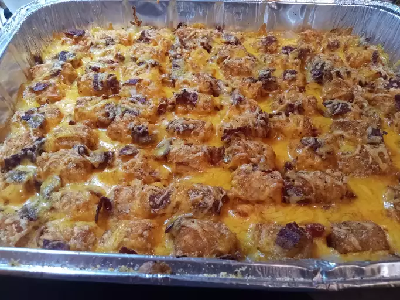

Back To Home
Tater Tot Casserole

Description
This tater tot casserole recipe is quick, easy, and incredibly satisfying.
Made with simple and cheap ingredients, it's sure to please everyone at
your dinner table.
Ingredients
- Beef
- Canned soup
- Seasonings
- Tater tots
- Cheese
Steps
- Cook the ground beef, then stir in the soup and seasonings.
-
Transfer the beef to a baking dish. Top with tater tots, then the
cheese.
- Bake until the tots are golden brown.